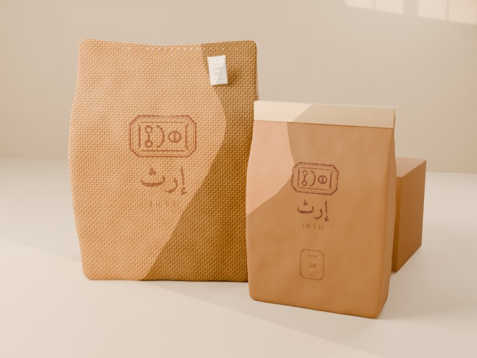

حزمة التطوير ١عبوات الجملةIRTH · BRAND BOOK
عبوات الجملة
الخيش بلون واحد يستقر الحبر فيه على رؤوس الخيوط، والكرافت بختم يدوي متفاوت الحبر، وبطاقة الدفعة مخيطة في الكيس.

الجملةخيش ٢٥ كغ، وكرافت ١٠ كغ، وكرتون الشحن.

الخيش ٢٥ كغالوجه كما رُقّم في ٧٫٢: الشعار، والدرجة، والموسم، وبطاقة الدفعة.

الكرافت ١٠ كغختم يدوي بالعنابي: الشعار، والدرجة، والموسم.
إعداد وتصميم: م/ أحمد درهم حسين الفقيه — الشريك المؤسس ومدير المشروعU5